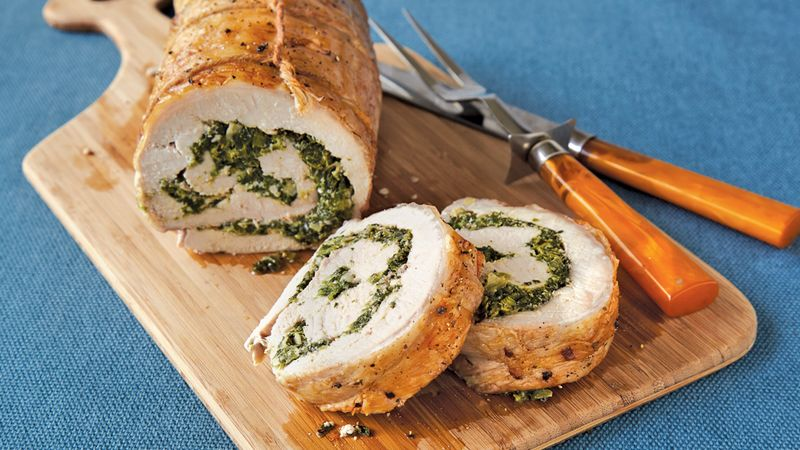

Pork Tenderloin

An impressive dish to show off to friends, family, and your in-laws
Spinach and feta stuffed pinwheel style pork tenderloin. It melts in your mouth.
Ingredients
- 1 or 2.5 pound pork tenderloins - (see note at bottom)
- 1 tablespoon oil
- 2-3 tablespoons fresh lemon, lime, or orange juice - (or 1 tablespoon of each)
- 2 teaspoons Italian seasoning
- 1 teaspoons garlic powder
- 1 teaspoon cumin
- 1 teaspoon salt
- 1 teaspoon chili powder
- ½ teaspoon smoked paprika - (optional but highly recommended)
- ¼ teaspoon black pepper
Steps
- Preheat oven to 400 degrees and lightly grease a large baking/casserole dish. Pierce tenderloins all over with a fork.
Rub oil onto all sides of the meat.
- Whisk together Italian seasoning, garlic powder, cumin, salt, chili powder, smoked paprika (if using) and black pepper.
Sprinkle mixture over tenderloin(s), patting it onto the surface of the meat on all sides. Place in prepared baking dish
and drizzle lemon/lime juice over the top.
- Bake for 25-35 minutes until outside is browned and crispy and centers are cooked through to desired doneness (you can
take them out on the early side if you like the centers a little pink).
- Spoon juices from the dish over the meat. Allow to rest on a cutting board or in the baking dish for 5-10 minutes. Slice
into 1 inch pieces. Spoon any remaining juices from the pan over the slices, garnish with fresh chopped cilantro if
desired, and serve.
Notes
- This recipe is pretty flexible and you can use 1-2 very small pork tenderloins, or one medium-large pork tenderloin OR
you can double or even triple the ingredients for the seasonings and serve a LOT of people with very large tenderloins.
Return to top
Return to homepage